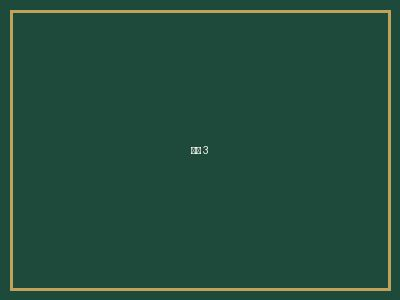

Image placeholder
三大模块
本科全程模块化规划，将选校、学术与科研能力同步推进，构建可执行的申请路径。
以 G7 测评与 3 对 1 专属团队做策略定制，拒绝模板化申请。
你的故事，应该只属于你。
—— 所以途策只做策略定制。每一份申请，从潜能测评开始重新设计。
FEATURES
左右滑动，查看途策的四大核心优势。
本科全程模块化规划，将选校、学术与科研能力同步推进，构建可执行的申请路径。
独家 G7 潜能测评，精准发现学术与申请双向优势，明确高分与名校策略。
藤校级文书团队深度共创，打造差异化故事与高命中率申请材料。
真实科研项目与 SCI 署名机会，增强学术核心竞争力，助力名校申请。
SERVICES
从美本到研究生，从主申到单项，途策为每一种升学路径配备专属策略团队。
SYSTEM
把能力拆成可灵活组合的模块，按阶段与目标按需选择。
面向尚未明确路线的家庭：规划咨询 + 家庭会员，确立以美本为核心的全球混申路径与提分方案。
申请主模块：GPA 管理、标化辅导、学术能力提升，六大教育规划方向系统推进。
实验室科研（真实 SCI 署名）、艺术作品集、社会性公益，塑造领导力·社会责任感·创新精神·全球胜任力。
WHY TUCE
我们不只是做方案，而是为每位学员构建从背景到录取的专属升学路径。
能力拆为独立模块，结合 G7 测评画像按需组合，拒绝千人一面的套模板。
藤校背景、全 A 优等文书团队，深知招生官标准与每一处申请关键。
公益、科研、文书都追求真实解决问题，把申请者从问题发现者推向「变革架构师」。
申请进度、材料与反馈全程可视，家长与学员实时掌握每一个关键节点。
METHODOLOGY
在标准化流程之外，用一套体系把潜能变成录取。
顶尖私校与企业采用的测评系统，建立真实独特的申请画像，发现被忽视的潜能。
以信心促兴趣、以兴趣激发行为，形成才能与动机相互强化的良性循环。
面对动力不足、沟通抵触、信心缺失，陪学生与家长找准问题、重拾决心。
兼顾名校录取短期目标与长远职业竞争力，用 RP 案例穿越打磨面试。
分级课程提升学术思维、批判性思维与表达力，快速融入海外学习与生活。
PROCESS
从规划到入学，拆成三大阶段、十个可执行步骤。
WRITING CAMP
把文书视为申请的绝对核心。藤校背景、全 A 优等的金牌文书顾问，以「3 天小班授课 + 2 天一对一训练」，发掘并写出征服招生官的故事。
师资团队 · MENTORS
你需要的是主动带来解法的人。藤校背景的规划、文书与个性化导师团队，1v1 陪你打磨每一处细节——我们的全部经验，为你所用。

哈佛大学 · 升学战略
多个申请季的策略操盘手，擅长把模糊的兴趣翻译成清晰的录取路径。（占位简介）
耶鲁大学 · 文书共创
一篇主文书改十余稿是常态，坚信好故事是想清楚之后的副产品。（占位简介）

斯坦福大学 · 背景提升
从科研到公益，专治「活动清单很满但没有一条立得住」。（占位简介）
MIT · 理工方向
带学生做真实 SCI 课题，相信硬实力是最好的申请语言。（占位简介）
2024–2026 三届学员，59 所全球院校，覆盖美英港新澳加。
全部录取去向在世界地图上公开可查。
SUCCESS STORIES
真实的途策学员故事 —— 从定位到录取，每一步都有迹可循。
 Admitted
Admitted Admitted
Admitted
Admitted学员之声 · TESTIMONIALS
Cornell University · 康奈尔大学
「RP 全真模拟面试做了四轮，真到面试那天反而是最放松的一次。」
The University of Hong Kong · 香港大学
「G7 测评把我自己都没意识到的优势挖了出来，后面整条申请线都顺了。」
UCL · 伦敦大学学院
「文书改到第十一稿的那天，我才真正想明白自己为什么要学这个专业。途策没有替我写，而是逼我想清楚。」
FAQ
关于途策留学，你最常问到的那些问题。
免费评估
填写下方表单，我们的资深导师会在 24 小时内与你联系，提供一次免费的留学定位评估。
途策留学重视并依法保护您的个人信息。提交的联系方式仅用于为您提供留学咨询与回访，不会用于其他用途，亦不会向无关第三方披露。
（本弹层为占位文本，正式上线前请替换为正式的《用户协议》与《隐私政策》全文，或链接至对应页面。）